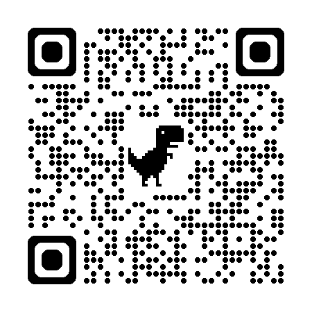
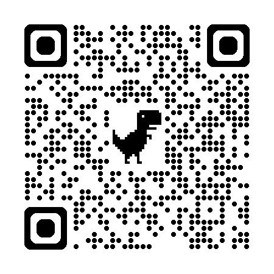
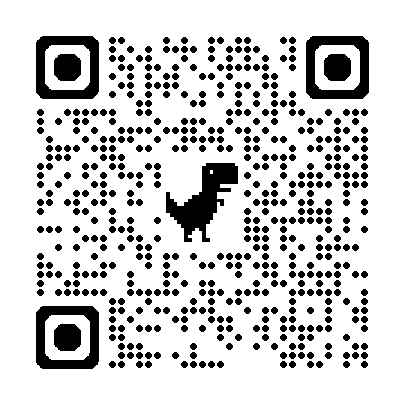
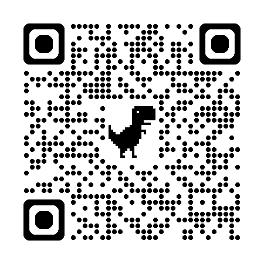

教育科技工具，能不能由「最了解教學現場的人」
——也就是教師自己——來決定它的樣子？
您剛剛備那堂課，
到底開了幾個分頁？

好用的工具散落在數十個不同網站。每次上課前都要重新尋找、比對、開啟分頁——光是「把工具準備好」就耗掉備課時間。
許多平台需要註冊帳號、綁定信箱，甚至要求學生登入。對國小學生而言登入流程本身就是難關，也牽涉個資與隱私疑慮。
免費版常伴隨廣告、使用次數限制或功能鎖定；課堂上突然跳出的廣告，對教學節奏與學生專注都是干擾。
教師只能被動接受平台商提供的功能。工具不貼合自己的教學需求時，也無從調整——主導權始終握在別人手裡。
所有工具完全免費，課堂上不會出現任何廣告干擾。教學節奏不被打斷，學生專注不被偷走。
教師只要把連結或 QR Code 給學生，免登入即可立即使用。沒有等待、沒有摩擦、沒有個資疑慮。
七大分類、即時搜尋、標籤篩選、熱門排行榜，幾秒內就能找到工具。一個網址走完備課流程。
採響應式設計（RWD），電腦、平板、手機皆適用；支援 PWA，可像 App 一樣安裝到桌面。
核心能力從「會寫程式」，
轉變為「能把教學需求說清楚」。
——而後者，正是教師最擅長的事。
先想清楚這個工具要解決課堂上的什麼問題、給誰用、要有哪些功能。
用具體、白話的語言把需求、畫面、操作流程描述給 AI。
由 AI 產生網頁程式碼，並請它說明每段程式的作用。
在瀏覽器中實際操作，把錯誤訊息或不理想之處回報給 AI。
與 AI 來回對話、逐步打磨，直到工具符合教學現場需求。
透過 GitHub Pages、Replit、Firebase 等服務免費發布，取得分享連結。
從每天都會遇到的麻煩做起。工具才會真正被使用，而不是被收進書籤後永遠沒打開。
而非萬能機器。AI 會出錯、會幻覺、會把不存在的功能寫進來——教師必須負責測試與把關。
先做出能用的版本，再依回饋逐步完善。不追求一次到位，追求今天比昨天好一點。
介面對小學生友善、操作單純，比功能華麗更重要。為一年級孩子設計，整個世界都會變清楚。
開源讓其他教師能複製、修改、再利用，把一個人的賦能擴散成所有人的賦能。
親師溝通與即時諮詢。
線上即時客服、設計專屬客服。
備課、課堂教學與評語回饋。
AI 備課小幫手、5W1H 靈感發射器。
語文讀寫與雙語能力。
中英打練習、成語填空、雙語轉寫。
閱讀理解評量。
PIRLS 閱讀理解生成、PIRLS 閱讀網。
教學行政與班級事務。
課程計畫 AI 審查、QRCode 批次、隱私保護。
寓教於樂的教育遊戲。
蜂類配對消消樂、童趣學園、平台跳躍。
課堂即時互動。
投票系統、文字雲、吉他彈唱點歌。
cagoooo.github.io/Akai
輸入單元與教學需求，由 AI 依 108 課綱生成 20 項教案初稿 · 一鍵匯出 Word。Flask + Gemini，全開源、可 fork 可部署。
Next.js + Gemini 2.5 Flash serverless 重構版。拍課本一頁 · 自動生成 PIRLS 四層次題組 · 一鍵匯出 PaGamO / PDF / Excel · QR 學生即時作答。

用一個詞回答：
「教師最該被賦能的事，是什麼？」

不再被動接受平台商的安排。需要什麼工具就做什麼、哪裡不滿意就改哪裡，教育科技的決定權重新回到教學現場。
一站式、免註冊、無廣告的設計，讓其他教師——尤其是對科技較不熟悉的夥伴——也能輕鬆把數位工具用進課堂。
一位非資訊背景的國小教師，能透過 AI 協作開發出 90 餘款工具，本身就是對「教師角色」最有力的重新定義。
平台採 MIT 授權完全開源，任何教師都能複製、修改、再利用，把一個人的成果變成眾人的資源。
工具自動化了備課、命題、行政審查等重複性工作，讓教師能把心力放回最重要的事——與學生相處、設計學習。
強化使用指南、無障礙標準、可訪性與在地化。
邀請更多教師一同提案、測試、維護，從一人作品變成眾人資源。
把「教師自造工具」的歷程與心法，整理成可被複製的師訓內容。
